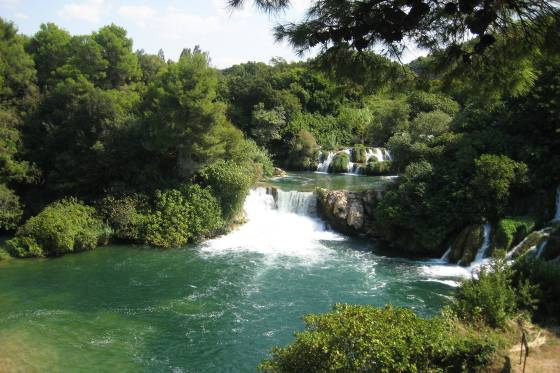

The national park is a vast and primarily unaltered area of exceptional natural value, including one or more preserved or insignificantly altered ecosystems. The purpose of the park is primarily to serve science, culture, education and recreation, while tourism activities have also been introduced for its visitors. Including the submerged part of the river at the mouth, the Krka River is 72.5 km long, making it the 22nd longest river in Croatia. It springs in the foothills of the Dinara mountain range, 2.5 km northeast of Knin. With its seven waterfalls and a total drop in altitude of 242 m, the Krka is a natural and karst phenomenon. The travertine waterfalls of the Krka River are the fundamental phenomenon of this river. The need to legally protect the Krka River and its exceptional natural values was already recognized in the mid 20th century. The initiative to proclaim the Krka River a national park was again launched in 1971, with the drafting of a physical plan entitled Krka National Park: physical development plan. On 24 January 1985, the Parliament of the Socialist Republic of Croatia proclaimed the area covering 142 km² from the Early Croatian fortresses of Trošenj and Nečven to the Šibenik Bridge, including 3.5 km of the course of the Čikola River, a national park. Due to four urban centres (Skradin, Bilice, Raslina and Zaton), the construction of the Zagreb–Split motorway and the development of tourism and other economic activities in the area, in 1997 the Croatian Parliament revised the park boundaries by passing the Act on Amendments to the Act on the Proclamation of Krka National Park. The southern border of the park was shifted to upstream from the Skradin Bridge, and the northern part virtually all the way to Knin. The park boundaries stretch for 50 km along the upper and middle course of the Krka River (two kilometres downstream from Knin all the way to Skradin), and the lower course of the Čikola River (including the confluence and 3.5 km of the river canyon), in the territory of the towns of Knin, Drniš and Skradin, the City of Šibenik, and the municipalities of Ervenik, Kistanje and Promina. The seat of the Public Institution of Krka National Park is in Šibenik, at Trg Ivana Pavla II 5, with branch offices in Skradin, Drniš and Knin. Krka National Park is managed by the Public Institute, under the jurisdiction of the Ministry of Environmental and Nature Protection of the Republic of Croatia. The activities of the Institute include protection, preservation and promotion of the national park, for the purpose of protecting and conserving the natural resources, and supervising the implementation of environmental protection measures within the protected area. The bodies of the Public Institute are the Management Council and Director. The Management Council governs the Institute, while its operations are organised and managed by the Director, who is appointed by the Minister of Environmental and Nature Protection. The Public Institute of Krka National Park is divided into six services and 15 departments that are overseen by the Office of the Director.